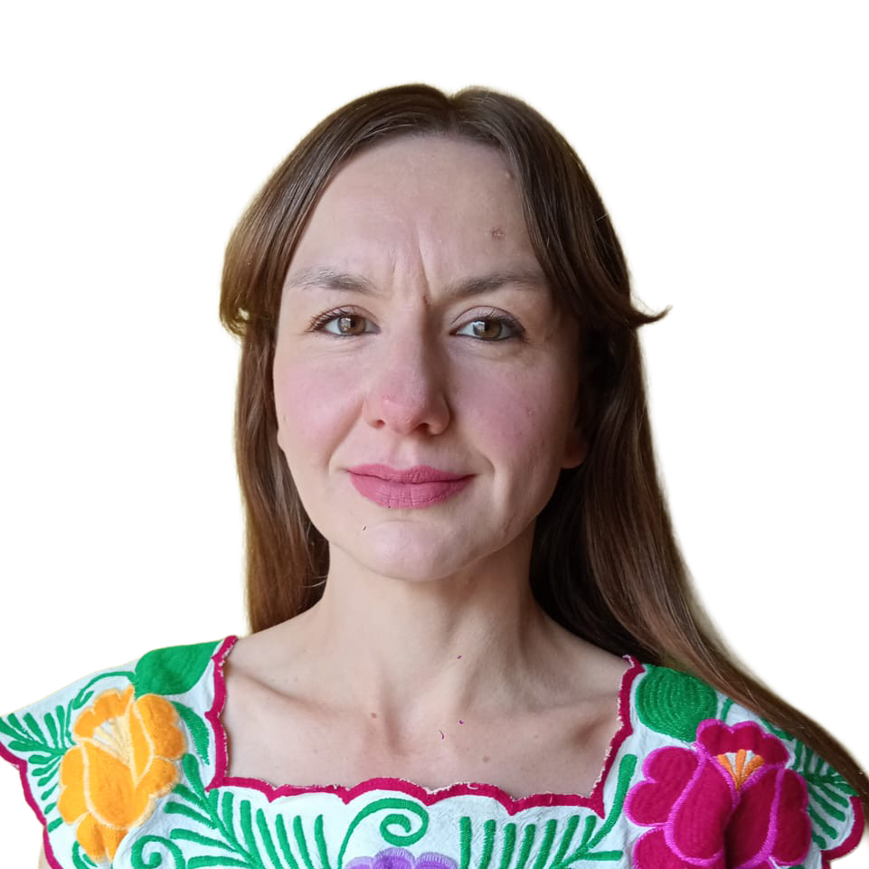
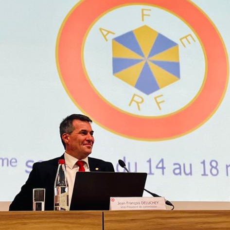

Rémy Charrier
CDMX
votación en línea: del 22 al 26 de mayo
Las elecciones consulares permiten elegir las y los consejeros de los franceses en el extranjero.
Puente entre los ciudadanos franceses que viven en México y las autoridades francesas (consulado, embajada), acompañan a las y los franceses en sus trámites administrativos.
Miembros del consejo consular, participan en la discusión de diversas temáticas como la asignación, monto y requisitos para la obtención de becas escolares, ayudas sociales o bien sobre cuestiones de seguridad.
Transmiten las preocupaciones locales a sus representantes en la Asamblea de los Franceses en el Extranjero, a las y los diputados y senadores que representan a los franceses que no residen en Francia, con la finalidad de que las problemáticas sean comprendidas a nivel nacional.
Los consejeros de los franceses en el extranjero son grandes electores: votan en las elecciones senatoriales, dos veces en el transcurso de su mandato.
Duración del mandato:
Los consejeros son electos por seis años.
Particularidades:
El escrutinio es proporcional: los electores votan por una lista, y los asientos son repartidos proporcionalmente según los resultados obtenidos.
Samuel Jouault
Merida, YUC

Séverine Grave
CDMX
Didier Pic
Zihuatanejo, GRO

Clotilde Barbier
Hermosillo, SON



Consejero de los Franceses en el Extranjero para la zona 1 de Brasil desde 2014, y miembro de la Asamblea de los Franceses en el Extranjero desde 2021.
"Desde 2021, pude en muchas ocasiones apreciar el excelente trabajo de Rémy Charrier como consejero en México. Siempre receptivo y dispuesto a ayudar cuando recibe solicitudes de nuestros compatriotas, también ha sido un gran colaborador de la Asamblea de los Franceses en el Extranjero (AFE), donde formo parte de la Comisión de Leyes, Reglamentos y Asuntos Consulares. Louise Guibrunet (número 2 en la lista), también posee un fuerte sentido del servicio público y el gusto por el trabajo bien hecho. Ella nos representó de manera excepcional en las últimas elecciones legislativas de América Latina. Tanto Rémy como Louise serán consejeros accesibles que sabrán escucharles y defender con vehemencia sus intereses, sus servicios consulares, sus liceos y sus programas de asistencia y becas en los Consejos Consulares, la AFE, así como ante el gobierno y los parlamentarios que representan a las y los ciudadanos franceses en el extranjero. ¡Cuentan con toda mi confianza!"